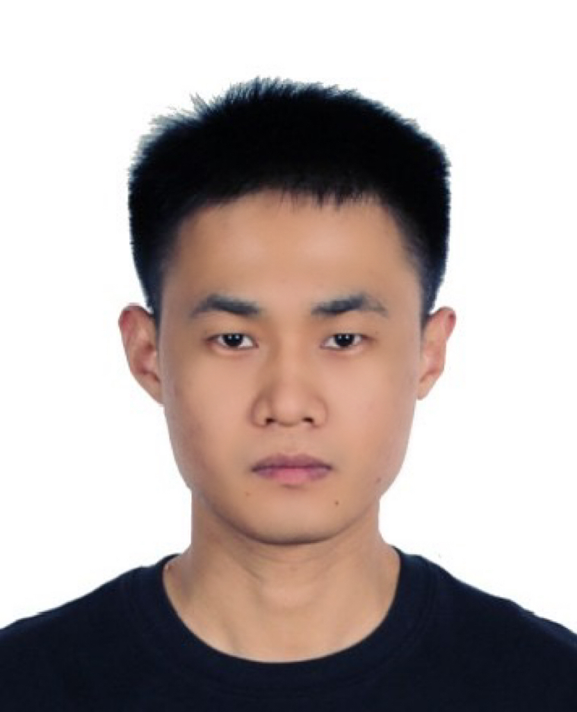

Haowen Pang庞浩文
School of Integrated Circuits and Electronics
|
 |


Short-Bio
I am currently a PhD student at the Beijing Institute of Technology, under the supervision of Prof. Chuyang Ye. I received my Master’s degree from Northeastern University (Shenyang, China), where I worked with Prof. Shouliang Qi. My research interests lie predominantly in medical image synthesis, with a particular focus on brain MRI. I am passionate about developing deep learning-based methods and foundation models that improve image quality, enhance multimodal fusion, and support intelligent diagnosis in neuroimaging. I am always open to academic exchange and collaboration. Please feel free to reach out if you are interested in working together!
Publications
(* Co-first auhtor; † Corresponding authorship)-
Cascaded diffusion model and segment anything model for medical image synthesis via uncertainty-guided prompt generation.
Haowen Pang, Xiaoming Hong, Peng Zhang, Chuyang Ye†.
Information Processing in Medical Imaging, 2025. -
InspirationOnly: Synthesizing expiratory CT from inspiratory CT to estimate parametric response map.
Tiande Zhang, Haowen Pang, Yanan Wu, Jiaxuan Xu, Zhenyu Liang, Shuyue Xia, Chenwang Jin, Rongchang Chen†, Shouliang Qi†.
Medical & Biological Engineering & Computing, 2025. -
Improved stroke lesion segmentation via cross-model knowledge distillation.
Zixin Liu, Haowen Pang, Xinru Zhang, Chuyang Ye†.
MICCAI Challenge on Ischemic Stroke Lesion Segmentation, 2025. -
BreathVisionNet: A pulmonary-function-guided CNN-transformer hybrid model for expiratory CT image synthesis.
Tiande Zhang, Haowen Pang, Yanan Wu, Jiaxuan Xu, Lingkai Liu, Shang Li, Shuyue Xia, Rongchang Chen, Zhenyu Liang†, Shouliang Qi†.
Computer Methods and Programs in Biomedicine, 2025. -
Transfer learning for brain lesion segmentation via data transfer.
Weiyan Guo, Xinru Zhang, Haowen Pang, Chuyang Ye†.
International Conference on Future of Medicine and Biological Information Engineering, 2024. -
Generating synthetic computed tomography for radiotherapy: SynthRAD2023 challenge report.
Medical Image Analysis, 2024. -
Depicting and predicting changes of lung after lobectomy for cancer by using CT images.
Yanan Wu*, Haowen Pang*, Jing Shen*, Shouliang Qi†, Jie Feng, Yong Yue, Wei Qian, Jianlin Wu†.
Medical & Biological Engineering & Computing, 2023. -
Two-stage contextual transformer-based convolutional neural network for airway extraction from CT images.
Yanan Wu, Shuiqing Zhao, Shouliang Qi†, Jie Feng, Haowen Pang, Runsheng Chang, Long Bai, Mengqi Li, Shuyue Xia, Wei Qian, Hongliang Ren†.
Artificial Intelligence in Medicine, 2023. -
Transformer-based 3D U-Net for pulmonary vessel segmentation and artery-vein separation from CT images.
Yanan Wu, Shouliang Qi†, Meihuan Wang, Shuiqing Zhao, Haowen Pang, Jiaxuan Xu, Long Bai, Hongliang Ren†.
Medical & Biological Engineering & Computing, 2023. -
Attention-guided multiple instance learning for COPD identification: To combine the intensity and morphology.
Yanan Wu, Shouliang Qi†, Jie Feng, Runsheng Chang, Haowen Pang, Jie Hou, Mengqi Li, Yingxi Wang, Shuyue Xia, Wei Qian.
Biocybernetics and Biomedical Engineering, 2023. -
NCCT-CECT image synthesizers and their application to pulmonary vessel segmentation.
Haowen Pang, Shouliang Qi†, Yanan Wu, Meihuan Wang, Chen Li, Yu Sun, Wei Qian, Guoyan Tang, Jiaxuan Xu, Zhenyu Liang, Rongchang Chen†.
Computer Methods and Programs in Biomedicine, 2023. -
CE-NC-VesselSegNet: Supervised by contrast-enhanced CT images but utilized to segment pulmonary vessels from non-contrast-enhanced CT images.
Meihuan Wang, Shouliang Qi†, Yanan Wu, Yu Sun, Runsheng Chang, Haowen Pang, Wei Qian.
Biomedical Signal Processing and Control, 2023. -
Deep CNN for COPD identification by multi-view snapshot integration of 3D airway tree and lung field.
Yanan Wu, Ran Du, Jie Feng, Shouliang Qi†, Haowen Pang, Shuyue Xia, Wei Qian.
Biomedical Signal Processing and Control, 2023. -
COPD identification using maximum intensity projection of lung field CT images and deep convolution neural network.
Yanan Wu, Shouliang Qi†, Haowen Pang, Mengqi Li, Yingxi Wang, Shuyue Xia, Qi Wang.
Chinese Journal of Health Management, 2022. -
A fully automatic segmentation pipeline of pulmonary lobes before and after lobectomy from computed tomography images.
Haowen Pang, Yanan Wu, Shouliang Qi†, Chen Li, Jing Shen, Yong Yue, Wei Qian, Jianlin Wu.
Computers in Biology and Medicine, 2022.
Awards
-
2nd Prize of MICCAI2024 BraTS-Synthesis (Global)
-
2nd Prize of MICCAI2023 SynthRAD2023-Task 1
-
2nd Prize of ISICDM2023 Glioma Segmentation Challenge
-
1st Prize of ISICDM2021 Lung CT Anatomy Segmentation Challenge-Lung Lobe
-
The Outstanding Master's Thesis of Northeastern University
© Haowen Pang | Last updated: Jun 2025